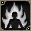

提供情報或編輯請求，請到情報提供公佈欄、編輯公佈欄。
技能的基礎知識
關於技能/魔法的發動
從鍵盤D鍵叫出的技能/魔法欄，拖放到畫面下方 1～0 的位置，
按下登錄的快捷鍵就會發動，或是指定對象。
雙擊技能/魔法欄也可以使用（全體瞬間移動(自己)等戰鬥中
不太使用的，推薦用這種使用方式）。
另外，技能/魔法欄內部的順序也可以調換，但調換這裡的順序的話
登錄在快捷鍵上的技能/魔法也會跟著改變，
所以快捷鍵那邊也需要重新設定。
另外，這裡登錄的攻擊，與SPACE鍵的攻擊是不同的東西，
平常不能連發的攻擊，可以用 SPACE→快捷鍵的攻擊 來連招。
關於連招
- 攻擊混用
在無法連打的技能延遲的空檔夾入攻擊，
以增加單位時間的總傷害量。
不使用的情況：技能→(延遲)→技能→(延遲)…
使用的情況：技能→攻擊(SPACE)→技能→攻擊(SPACE)…
基本範例：攻擊(SPACE)→刺擊 or 正拳 or 突刺 or 海波斬→攻擊(SPACE)→ 
快速藥水
技能之間的連招也可以，為此必須使用混合藥水這個道具。
效果時間中，原本無法連發的技能也有部分可以連發。
單獨可以連發的只有延遲 0 的技能。
總之只要一直連按快捷鍵就好，所以非常輕鬆。- 空手發動技能
空手使用技能會延遲-1。
因此，可空手使用的技能多的修道士，
在空手狀態下幾乎所有技能都能單獨連發。
魔術師的附魔武器也沒有武器限制，所以空手的話同樣可以連發。
其他職業有很多技能以裝備武器為發動條件，所以無法享受這個好處。
(不裝備武器就能發動的技能範例：吟遊詩人的混亂或聖職者的神聖打擊等) - 吟遊詩人的戰歌
只有在吟遊詩人的戰歌效果中延遲會再-1，
所以延遲 1 的技能也能單獨連發。 (雷霆之槍等部分技能不可能。)
(雷霆之槍等部分技能不可能。)
攻擊取消
發動技能時， 混入攻擊(SPACE)。
混入攻擊(SPACE)。
主要用來中斷動作長的技能的動作，快速進入下一個行動，
而使用。
烈焰斬→二輪新月斬的連招的話，
烈焰斬+攻擊(SPACE)→二輪新月斬→烈焰斬+攻擊(SPACE)。
另外還有，
力量軍刀(Power Saber)+攻擊→一字斬→二輪新月斬+攻擊→一字斬→力量軍刀+攻擊
關於技能等級
有時比角色的Lv更重要。
技能等級每上升 1，可獲得接近 STR+2、HIT+1 的效果。
另外，也有些為了習得其他技能需要一定的技能等級。
技能等級不能高於角色等級。(Lv≧SLv) 參照:技能經驗值
(轉職後的攻擊技能等級維持轉職前，是例外。)
技能鍛鍊推薦地點
『要在哪裡提升技能等級才好呢？』
關於這個疑問，
請參考本站的怪物資料，找擁有技能等級+20以上 Lv 的怪物來打。
『為什麼是技能等級+20？』
因為不到 20 以上的話，獲得的技能經驗值會減少。
但是，只有攻擊是以角色等級而不是技能等級為準。
注意事項是，從敵人獲得的技能經驗值最大量是固定的，
所以不是一直打下去就好，請注意。
即便如此最大量的部分還是盡量獲得比較好，所以在威力過剩的
情況下，把攻擊力相關裝備換成不會死/打得死的弱裝備也是一個辦法
（具體來說是武器/戰士耳環/戒指等）。
穿DEX裝備的話SLv上升會變快。
- 海灘夏日（○○路線）
因為不會獲得經驗值，所以可以不升Lv只升SLv。 - 不可思議地城
表格列佛區域：到SLv50為止不會減少。
裡格列佛區域：到SLv60為止。
表胡桃區域：到SLv70為止。
裡胡桃區域：到SLv79為止。
不管哪裡都要盡量降低AC才撐得住，不過敵人也相當硬，感覺不錯。 - 卵巢區域3・4
天使托普斯系很硬，等級也不低，所以容易提升。 - 火山區域1・2
同樣是天使托普斯系、死亡系、蒂拉諾很硬，等級也有，所以容易提升。 - 惡魔島1～5
敵人硬、攻擊弱、等級又高，所以容易提升。
特別是5的巨大塔特拉等級高達Lv95，
到SLv75為止都能獲得最大技能經驗值，但缺點是HP偏少。
要拿掉勳章長時間打一隻，還是單純增加擊倒數量，是個分歧點。
順帶一提，同地圖的卡麥爾船長雖然是Lv99，
但STR・DEX都高，攻擊很痛，而且SLv太低的話
不要說暴擊連失手也多，所以一開始可能不好打倒。
幸好，像天使托普斯一樣靠近就會停在原地，所以容易避免交戰。
如果要挑戰，等級低的時候要小心。 - 天上地城
昇天後就決定是這裡了。
2次D以後所有敵人的Lv都是 120，所以到滿級為止技能經驗值都不會減少。
提升善惡Lv的話不管願不願意都會升，所以盡量去狩獵吧。